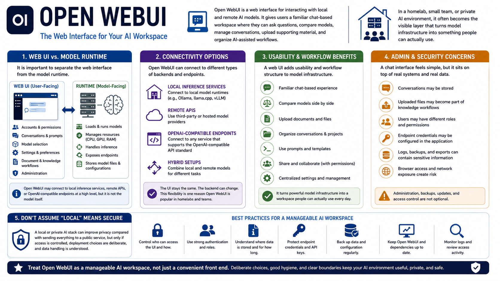

What Is Open WebUI?
Connecting to LMS... Progress: in progress

Narration
Open WebUI is a web interface for interacting with local and remote AI models. It gives users a familiar chat-based workspace where they can ask questions, compare models, manage conversations, upload supporting material, and organize AI-assisted workflows. In a homelab, small team, or private AI environment, it often becomes the visible layer that turns model infrastructure into something people can actually use.
It is important to separate the web interface from the model runtime. A runtime loads and serves models. A web UI provides the user-facing experience: accounts, conversations, settings, prompts, document workflows, model selection, and administration. Open WebUI may connect to local inference services, remote APIs, or OpenAI-compatible endpoints at a high level, but it is not the model itself.
A web UI adds usability and workflow structure, but it also adds administration concerns. Conversations may be stored. Uploaded files may become part of knowledge workflows. Users may have different permissions. Endpoint credentials may be configured in the application. Logs, backups, and browser access can all carry sensitive information. A chat interface feels simple, but it sits on top of real systems and real data.
Avoid the assumption that local automatically means secure. A local or private AI stack can improve privacy compared with sending everything to a public service, but only if access is controlled, deployment choices are deliberate, and data handling is understood. Open WebUI is most useful when it is treated as a manageable AI workspace, not just a convenient front end.